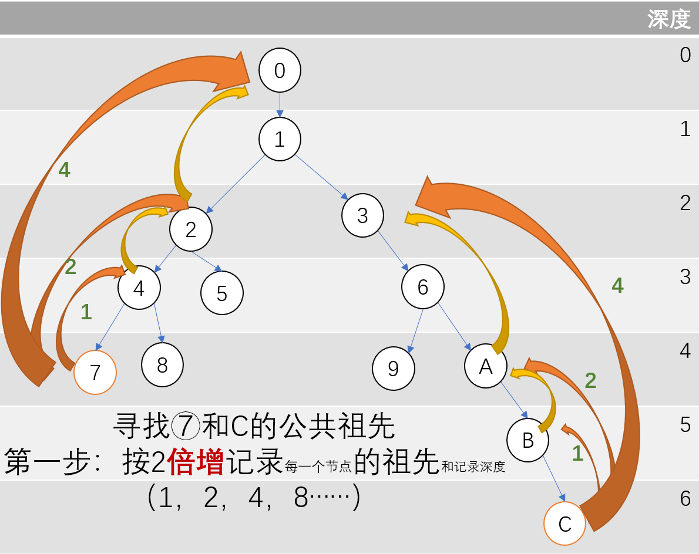
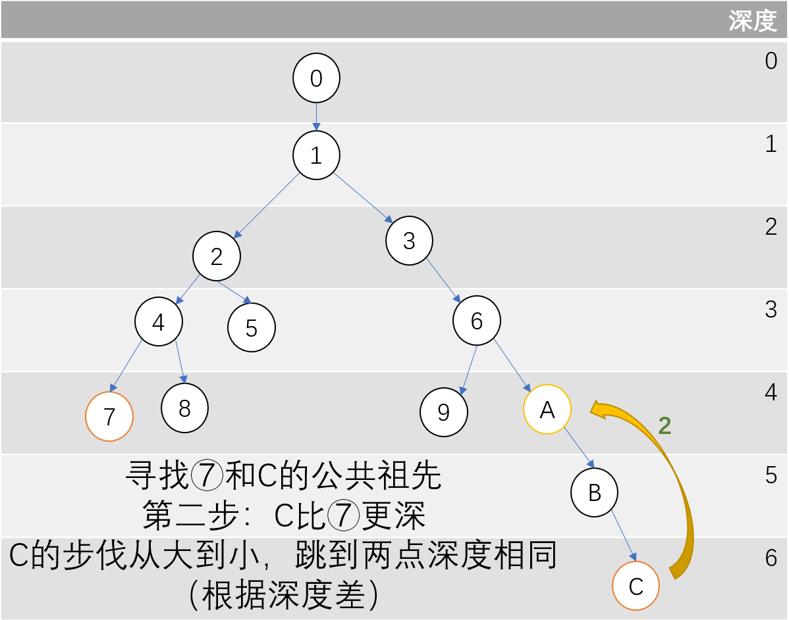
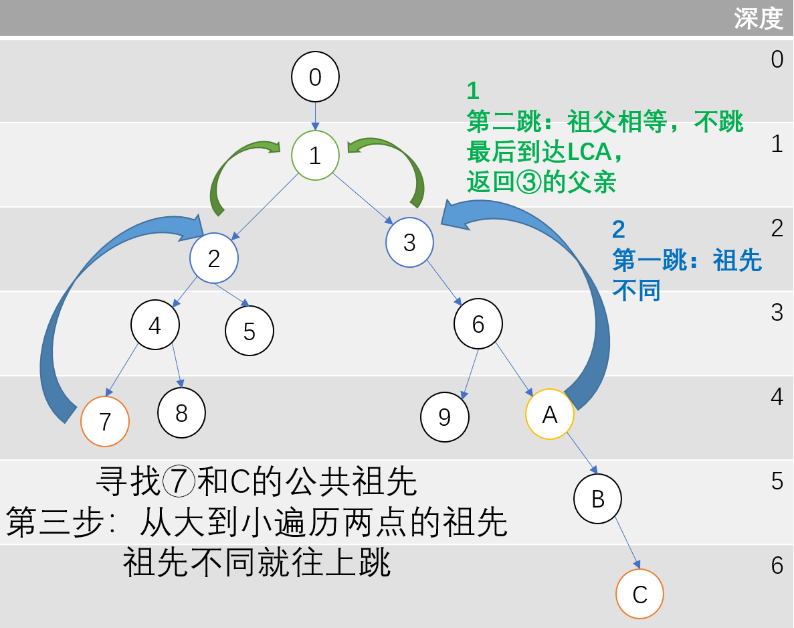

最近公共祖先（LCA）倍增法
模板题：https://www.luogu.com.cn/problem/P3379
倍增法是一种用于在树中快速找到两个节点的最近公共祖先（LCA）的算法。它的核心思想是通过预处理和二进制跳跃来高效地找到公共祖先。
看了里面的题解，大概分为三步
- 深度优先搜索，获得每个结点的深度和
祖先 
dfs找深度和祖先
1 | void dfs(int me) { |
father[x][i]表示节点x向上跳2^i步后的祖先节点。lg[depth[x]]表示节点x的深度的对数值，用于确定最大跳跃步数。对数表可以提前生成好
1 | void init_lg() { |
表格如下：
| x | 0 | 1 | 2 | 3 | 4 | 5 | 6 | 7 | 8 | 9 | … |
|---|---|---|---|---|---|---|---|---|---|---|---|
| lg[x] | 0 | 0 | 1 | 1 | 2 | 2 | 2 | 2 | 3 | 3 | … |
- 寻找公共祖先，先将更深的点回溯到与另一个点深度相同的位置

快速回溯到深度相同
1 | if (depth[x] < depth[y]) |
- 逐跳往上找公共祖先

逐跳往上找公共祖先
1 | for (int i = lg[depth[x]]; i >= 0; --i) { |
- 从最大的
i开始（即从最大的跳跃步数开始），逐步减少i，检查节点x和y的2^i祖先是否相同。 - 如果
father[x][i]和father[y][i]不相同，则将x和y更新为它们的2^i祖先。 - 目的：将
x和y同时向上移动，直到它们的祖先相同。 - 当循环结束时，
x和y的最近公共祖先就是father[x][0]，即x和y的直接父节点。
总代码1
2
3
4
5
6
7
8
9
10
11
12
13
14
15
16
17
18
19
20
21
22
23
24
25
26
27
28
29
30
31
32
33
34
35
36
37
38
39
40
41
42
43
44
45
46
47
48
49
50
51
52
53
54
55
56
57
58
59
60
61
62
63
64
65
66
67
68
69
70
using namespace std;
const int N = 500005;
int n, q, root;
vector<int> sons[N];
bool vis[N];
int lg[N]; // 用于存储每个节点的最大深度所需的倍增表大小
int father[N][31]; // father[i][j]:结点i的2^j祖先
int depth[N];//depth[i]:结点i的深度
// 初始化lg数组，计算log2的值
void init_lg() {
for (int i = 2; i < N; ++i) {
lg[i] = lg[i>>1] + 1;
}
}
// 深度优先搜索，计算每个节点的父节点倍增表
void dfs(int me) {
// 填充倍增表，父节点表的大小是log2(depth)+1
for (int i = 1; i <= lg[depth[me]]; ++i) {
father[me][i] = father[father[me][i - 1]][i - 1];
}
for (int son : sons[me]) {
if (vis[son])
continue;
vis[son] = true;
depth[son] = depth[me] + 1;
father[son][0] = me;
dfs(son);
}
}
// 查询x和y的最低公共祖先
int query(int x, int y) {
if (depth[x] < depth[y])
swap(x, y);//让x比y深
// 让x和y在同一深度
while(depth[x]>depth[y])
x=father[x][lg[depth[x]-depth[y]]];//x跳到和y相同的祖先
if (x == y) return x;
// 逐步跳到二分的父节点
for (int i = lg[depth[x]]; i >= 0; --i) {
if (father[x][i] != father[y][i]) {
x = father[x][i];
y = father[y][i];
}
}
return father[x][0];
}
int main() {
scanf("%d%d%d", &n, &q, &root);
init_lg(); // 初始化lg数组
int x, y;
for (int i = 1; i < n; i++) {
scanf("%d%d", &x, &y);
sons[x].push_back(y);
sons[y].push_back(x);
}
// 初始化根节点
vis[root] = true;
dfs(root); // 执行dfs，填充倍增表
while (q--) {
scanf("%d%d", &x, &y);
printf("%d\n", query(x, y)); // 查询LCA
}
return 0;
}